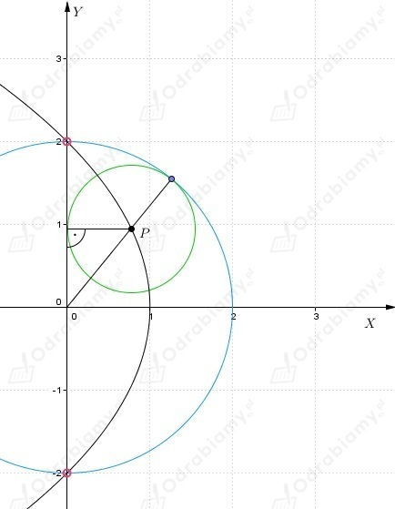

a)
Należy wyznaczyć zbiór środków okręgów przechodzących przez punkt A(0, 4) i stycznych
do osi OX.
Niech punkt P(x, y) będzie środkiem okręgu spełniającego warunki zadania, a Q(x, 0) - punktem
styczności tego okręgu z osią do OX.
Wówczas:
Zatem szukanym zbiorem punktów jest parabola
b)
Należy wyznaczyć zbiór środków okręgów przechodzących przez punkt A(6, 0) i stycznych
do osi OY.
Niech punkt P(x, y) będzie środkiem okręgu spełniającego warunki zadania, a Q(0, y) - punktem
styczności tego okręgu z osią do OX.
Wówczas:
Zatem szukanym zbiorem punktów jest

Niech punkt P(x, y) będzie środkiem okręgu K1 spełniającego warunki zadania.
Promień tego okręgu jest równy x i spełnia warunek
Niech A będzie punktem styczności okręgów K i K1.
Wówczas:
oraz
zatem otrzymujemy równanie
Zatem szukanym zbiorem punktów są punkty spełniające warunek